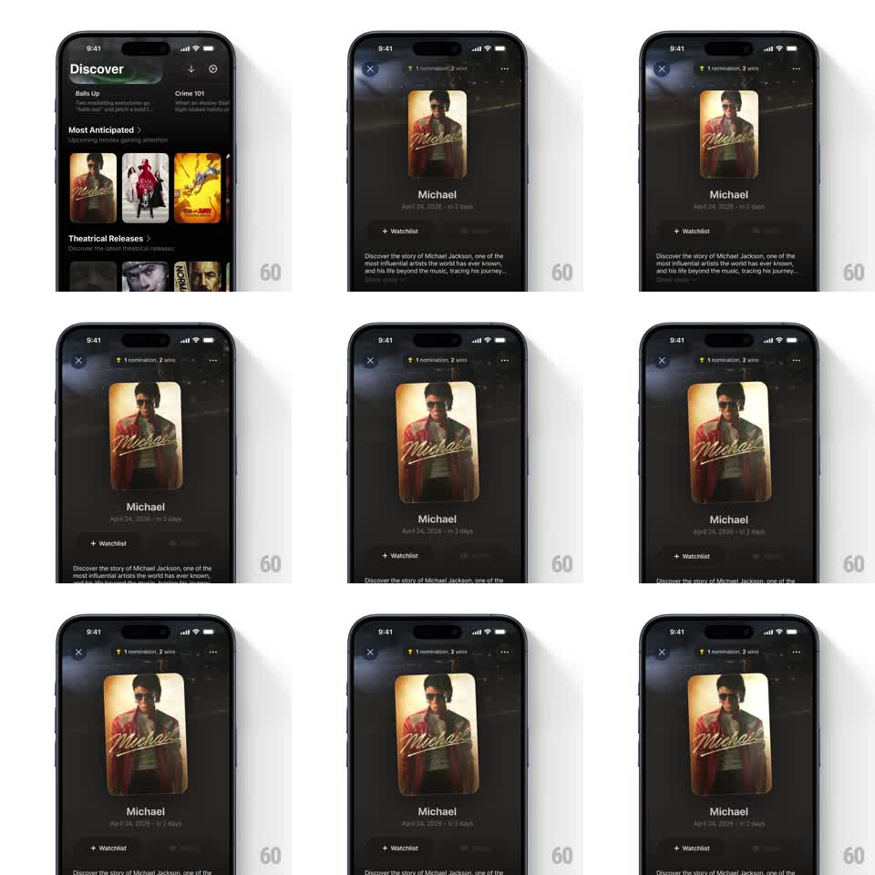

Media
Frame-by-frame

Rebuild this interaction 1:1: Binge's movie detail hero - the poster card tilts in 3D with device gyroscope while a light glare sweeps across its surface, and the awards pill springs in above it.

Rebuild this interaction 1:1: Binge's movie detail hero - the poster card tilts in 3D with device gyroscope while a light glare sweeps across its surface, and the awards pill springs in above it.
## Integration
Integration: stack-agnostic spec - springs given as stiffness/damping, timed motions as duration + curve; map every value to your framework and animation library of choice.
## Scene
Movie detail sheet over the Discover feed: close X and a floating awards pill ("1 nomination, 2 wins") top, the poster card center (title art), then the movie name, release line, "+ Watchlist" button, and synopsis below.
## Motion spec
Pattern: gyro-parallax poster tilt with a specular glare sweep.
- Gyro tilt maps to the card's rotateX/rotateY (+/- 10 degrees max, smoothed with a light spring ~180/20 so it lags the hand).
- A diagonal glare band (white gradient, ~30% opacity, blurred edge) slides across the poster opposite the tilt - light catching the card as it turns.
- The card casts a soft shadow that shifts and stretches with tilt direction.
- On sheet open: the poster scales from its feed thumbnail position (shared-element grow, spring ~280/18) and the awards pill pops in above (scale 0.6 -> 1, spring ~320/16, 100ms later).
- Text and buttons below stay fixed; only the poster and pill move.
## Calibration
- The glare sells the material - it must track tilt continuously, not in steps.
- Keep tilt range modest; the poster should never feel like it's flipping.
## Reduced motion
Static poster with a fixed glare; pill fades in (200ms).
## Don't miss
- The poster corners lift with parallax - the title art sits on the card, not under a flat overlay.
- The awards pill floats above the sheet's dimmed backdrop with its own shadow.